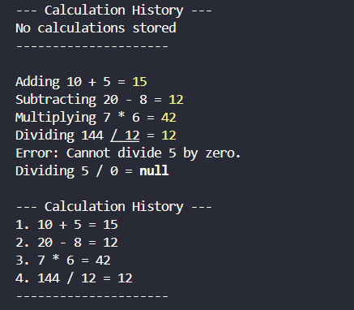

JavaScript Calculator with History
A vanilla JavaScript calculator engine designed to execute standard arithmetic processing while logging computation state history. Built with focus on structural efficiency, explicit edge-case error prevention (division by zero mitigation), and a clean console logging reporting view.
JavaScript
Node.js